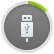

<!DOCTYPE html>
<html>
    <head>
        <title>Wandoujia 2.0 USB Debug</title>
        <meta http-equiv="content-type" content="text/html; charset=utf-8">
        <link rel="stylesheet" type="text/css" href="stylesheets/usb-debug.css" />
        <!--[if IE 6]>
        <link rel="stylesheet" href="stylesheets/ie6.css">
        <![endif]-->
        <!--[if IE 7]>
        <link rel="stylesheet" href="stylesheets/ie7.css">
        <![endif]-->
    </head>
    <body onselectstart="javascript:return false;">
        <div class="wrap vbox">
            <div class="container"></div>
            <div class="u-footer w-cf">
                <button class="w-btn w-btn-primary button-check-usb-debug">我已打开</button>
                <div class="button-feedback link">还是连不上？我要反馈！</div>
                <div class="button-return link">返回教程</div>
                <div class="button-more link">其他手机教程</div>
                <a class="button-video w-btn" target="_blank"><div class="play"></div>视频教程</a>
            </div>
        </div>
        <script type="text/template" id="feedBackView">
            <div>
                <span class="describe">还是连不上怎么办？试试下面的方法吧！</span>
            </div>
            <div class="bottom">
                <div class="message">
                    <div>
                        <div class="number">1</div><div class="describe">下载快速设置器到手机，打开「USB 调试」开关:</div>
                    </div>
                    <div class="body">
                        <p>请输入您的手机号码，豌豆荚会免费将下载地址用短信的形式发送到您的手机上</p>
                        <div class="w-form-inline send-message">
                            <input type="text"></input>
                            <button class="w-btn button-send">发送短信</button>
                            <p class="not-a-number w-text-warning">您输入的好像不是一个手机号</p>
                            <p class="connect-error w-text-warning">貌似网络不给力，请稍后再试～</p>
                        </div>
                    </div>
                </div>
                <div class="help">
                    <div>
                        <div class="number">2</div><div class="describe">访问豌豆荚帮助中心，获取更多帮助：</div>
                    </div>
                    <div class="body">
                        <div class="href-container">
                            <a class="href usb-help" href="http://help.wandoujia.com/entries/21550377-usb" target="_default"><div class="img"></div><span class="wording">查看打开「USB 调试」的帮助</span></a>
                            <a class="href usb-bbs" href="http://help.wandoujia.com/anonymous_requests/new?guid=null&clientVersion=null" target="_default"><div class="img"></div><span class="wording">发帖求助，让专业的豌豆们帮您解答</span></a>
                        </div>
                    </div>
                </div>
            </div>
        </script>
        <script type="text/template" id="selectView">
                <h6 class="describe w-text-info">请按照您的手机品牌或系统选择对应的打开「USB 调试」开关的教程：</h6>
                <ul class="select u-shadow brands w-cf">
                <%
                    _.each(brands, function (brand) {
                %>
                    <li class="brand <%= brand.className %>">
                        <div class="logo <%= brand.className %>"></div>
                        <div class="h5 title"><%= brand.name %></div>
                        <div class="top"></div>
                        <div class="check-course">
                            <div class="play"></div>
                            <div class="info">查看教程</div>
                        </div>
                    </li>
                <%
                    });
                %>
                </ul>
                <ul class="select u-shadow systems w-cf">
                <%
                    _.each(systems, function (system) {
                %>
                    <li class="system <%= system.className %>">
                        <div class="h5 title"><%= system.name %></div>
                        <div class="top"></div>
                        <div class="check-course">
                            <div class="play"></div>
                            <div class="info">查看教程</div>
                        </div>
                    </li>
                <%
                    });
                %>
                </ul>
        </script>
        <script type="text/template" id="sliderView">
            <div class="w-cf title">
                <div class="h5 describe"></div>
            </div>
            <div class="container connect-error">
                <div class="w-ui-loading" >
                    
                </div>
                <div class="error-des">
                    <div>貌似网络不给力，请稍后再试～</div>
                    <button class="button-reload w-btn w-btn-primary">重试</button>
                </div>
            </div>
            <div class="container slider-container">
                <div class="ul-container">
                    <div class="pointer"></div>
                    <div class="button left"><div class="icon"></div></div>
                    <div class="button right"><div class="icon"></div></div>
                </div>
                <div class="navigation">
                    <span class="number"></span>
                    <span class="steps-describe"></span>
                    <span class="page"></span>
                </div>
            </div>
        </script>
        <!--[if IE 6]>
            <script src="javascripts/DD_belatedPNG_0.0.8a-min.js"></script>
        <![endif]-->
        <!-- build:js javascripts/usb-debug.js -->
        <script type="text/javascript">
        if (window.OneRingRequest === undefined) {
            window.externalCall = function () {};
            window.OneRingRequest = function () {};
            window.OneRingStreaming = function () {};
        }
        </script>
        <script type="text/javascript" src="components/jquery/jquery.js"></script>
        <script type="text/javascript" src="components/underscore/underscore.js"></script>
        <script type="text/javascript" src="javascripts/usb-debug/usb-debug-device.js"></script>
        <script type="text/javascript" src="javascripts/usb-debug/usb-debug.js"></script>
        <!-- endbuild -->
    </body>
</html>
